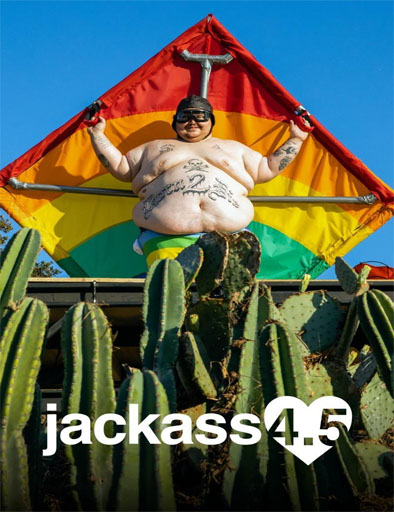

Jackass: La pelicula

Sinopsis
25 de octubre de 2002
Johnny Knoxville y el resto del reparto de la serie de televisión "Jackass" realizan las hazañas más escandalosas y divertidas en Japón, donde se disfrazan de pandas y atacan un campo de golf. Top arrow_upward
Jackass: Numero 2

Sinopsis
22 de septiembre de 2006
Johnny Knoxville y compañía contraatacan con la serie de bromazos y salvajadas más espectacular de la historia. Top arrow_upward
Jackass: 2.5

Sinopsis
19 de diciembre de 2007
Cuando Johnny Knoxville y los chicos volvieron en 2006 para hacer "Jackass: number two", filmaron más que una película. En concreto, filmaron una película y media. En este corte se incluyen nuevas entrevistas y bromas nunca vistas. Top arrow_upward
Jackass Presents: Mat Hoffman's Tribute to Evel Knievel

Sinopsis
27 de mayo de 2008
Jackass Presents: Mat Hoffman's Tribute to Evel Knievel es una
película de
comedia de 2008 directa a
DVD
y la primera película de Jackass Presents en la franquicia Jackass.
La
película
es un
tributo al
doble de
acción Evel Knievel, quien murió el 30 de noviembre de 2007, un año
antes del estreno de la película. Top
arrow_upward
jackass: 3D

Sinopsis
15 de octubre de 2010
El formato Jackass, donde Johnny Knoxville y sus amigos se someten al peligro de forma voluntaria, se adapta al cine 3D. En su primera semana en USA ha obtenido un enorme éxito de taquilla: nada menos que 50 millones de dólares, la película con mejor entrada del otoño 2010. Top arrow_upward
Jackass: 3.5

Sinopsis
14 de junio de 2011
Los chicos de Jackass vuelven otra vez con una película repleta de más increíbles proezas, gamberradas y delitos, incluyendo el encuentro íntimo y personal de Steve-O con una tortuga lagarto, a Chris Pontius y su increíble pájaro carpintero y un electrizante juego de limbo con toda la pandilla. Top arrow_upward
Jackass: Abuelo sinvergüenza

Sinopsis
25 de octubre de 2013
Irving Zisman emprende un viaje junto a su joven e impresionable nieto. Juntos, descubren a bailarines exóticos y otros singulares personajes. Top arrow_upward
Jackass: Abuelo sinvergüenza.5

Sinopsis
3 de junio de 2014
Irving Zisman lleva a su joven e impresionable nieto Billy, a un viaje a través de América. Cámaras ocultas graban situaciones descabelladas en las que conocen a bailarines exóticos, clientes de un bar de motociclistas u otros ciudadanos inocentes. Top arrow_upward
Jackass: Forever

Sinopsis
4 de febrero de 2022
Después de diez años, la tripulación de Jackass está de regreso para su cruzada final. Johnny Knoxville, Steve-O y el resto de la pandilla regresan para otra ronda de divertidas, salvajemente absurdas y, a menudo, peligrosas demostraciones. Top arrow_upward
Jackass 4.5
Sinopsis
20 de mayo de 2022
Película que constará de detrás de escenas, imágenes sin usar, tomas descartadas y entrevistas con el elenco y los miembros del equipo de "Jackass Forever". Top arrow_upward
Jackass: Temporada 1

Sinopsis
ESTRENO: 12 de abril, 2000 EPISODIOS: 8 ÚLTIMA EMISIÓN: 17 de febrero, 2002
Se anuncia frecuentemente al promocionar este programa, pero es en serio, se debe tener en cuenta ¡No trate de hacer esto en casa!. La vida es un reto doble en dónde se incrementa la intensidad de los desafíos para estos super héroes faltos de conciencia, en su exitosa serie sin cultura donde presentan actos publicitarios de mal gusto y muy frecuentemente dolorosos. Pero algunos de estos cortos son tan llamativos que generan carcajadas en las personas y llegan hasta el asombro nervioso e incrédulo. Top arrow_upward
Jackass: Temporada 2

Sinopsis
ESTRENO: 30 de diciembre, 2000 EPISODIOS: 8 ÚLTIMA EMISIÓN: 17 de febrero, 2002
Se anuncia frecuentemente al promocionar este programa, pero es en serio, se debe tener en cuenta ¡No trate de hacer esto en casa!. La vida es un reto doble en dónde se incrementa la intensidad de los desafíos para estos super héroes faltos de conciencia, en su exitosa serie sin cultura donde presentan actos publicitarios de mal gusto y muy frecuentemente dolorosos. Pero algunos de estos cortos son tan llamativos que generan carcajadas en las personas y llegan hasta el asombro nervioso e incrédulo. Top arrow_upward
Jackass: Temporada 3

Sinopsis
ESTRENO: 03 de diciembre, 2001 EPISODIOS: 9 ÚLTIMA EMISIÓN: 17 de febrero, 2002
Se anuncia frecuentemente al promocionar este programa, pero es en serio, se debe tener en cuenta ¡No trate de hacer esto en casa!. La vida es un reto doble en dónde se incrementa la intensidad de los desafíos para estos super héroes faltos de conciencia, en su exitosa serie sin cultura donde presentan actos publicitarios de mal gusto y muy frecuentemente dolorosos. Pero algunos de estos cortos son tan llamativos que generan carcajadas en las personas y llegan hasta el asombro nervioso e incrédulo. Top arrow_upward